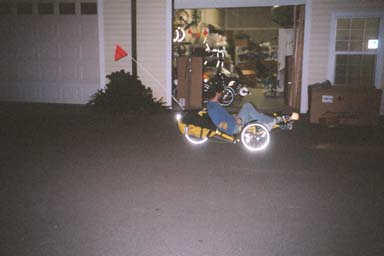

Catrikes are made in the USA, in
Florida. They are some of the lightest-weight trikes available
today. They are also some of the least costly. Catrike has
been in business for about five years, I believe, and I think they are
now the largest trike manufacturer in the world? Their popularity
comes from offering a quality product at a good price.
Peregrine Bicycle Works (PBW) in Chico,
CA specializes in tricycles. The owner, Hugh Kern, has a lot of
experience with
tricycles, and knows all the tricks to get things working
smoothly. My experience with Hugh was great. He did quality
work, and acted with integrity.
When I decided that I wanted to try a
Catrike, they were a rare commodity. Manufacturing had been shut
down in the fall of 2005, in order to re-vamp the production line.
Trikes were back-ordered, and none were coming off the line.
Hugh was apologetic that he didn't have any in stock. But
he
set me up to meet two of his customers who had bought Catrikes.
One let me ride a Speed and a Road, and the other let me ride a
Pocket. The day I rode the Pocket, I ordered one for myself.
Hugh's experience with trikes was evident when he was making the final
adjustments to fit the trike to me. In addition to installing the
accessories mentioned above, Hugh also performed the following services:
Fender installation - When I arrived to pick up the trike, the
fenders were not installed yet. There was a very slight problem,
the way the supports needed to be bent to fit the trike caused some of
the paint to crack and peel (on the fender support), and Hugh wanted to
make sure I was OK with this before he completed the installation.
(I was actually quite pleased to have an excuse to apply some
yellow paint.)
Other work that was done at pickup time:
Chain installation - after boom
length adjustment with me in the seat. Hugh made sure that there
was enough chain for the
large
chainring / large cog combination (to prevent damage to the
derailleur or the frame).
Wheel alignment (which Hugh
wanted to perform with me sitting on the trike).
Mirror installation - finding
the location that worked best for me.
And, oh yes - Hugh fashioned a lightweight flag mount on the rear rack,
using only a single zip-tie. :-)

Hugh giving my Pocket a test-ride
Back
email biscuit@direcway.com
{kind=link}